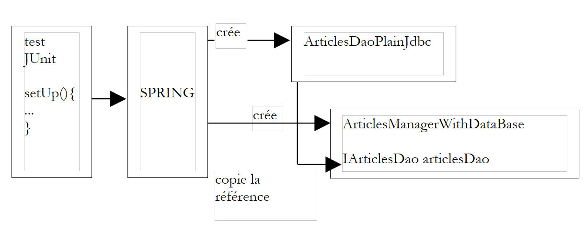
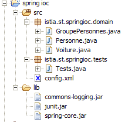

2. Article 1 - Spring IoC
Objectifs du document :
- découvrir les possibilités de configuration et d'intégration du framework Spring (http://www.springframework.org)
- définir et utiliser la notion d'IoC (Inversion of Control), également appelée injection de dépendance (Dependency Injection)
2.1. Configurer une application 3-tier avec Spring
Considérons une application 3-tier classique :
 |
On supposera que l'accès aux couches métier et DAO est contrôlé par des interfaces Java :
- l'interface [IArticlesDao] pour la couche d'accès aux données
- l'interface [IArticlesManager] pour la couche métier
Dans la couche d'accès aux données ou couche DAO (Data Access Object), il est fréquent de travailler avec un SGBD et donc avec un pilote JDBC. Considérons le squelette d'une classe accédant à une table d'articles dans un SGBD :
Pour faire une opération sur le SGBD, toute méthode a besoin d'un objet [Connection] qui représente la connexion à la base, par laquelle vont transiter les échanges entre celle-ci et le code Java. Pour construire cet objet, on a besoin de quatre informations :
le nom de la classe du pilote JDBC du SGBD | |
l'url JDBC de la base à utiliser | |
l'identité sous laquelle on crée la connexion | |
le mot de passe de cette identité |
Comment notre classe [ArticlesDaoPlainJdbc] précédente peut-elle obtenir ces informations ? Il y a diverses possibilités :
solution 1 - les informations sont codées en dur dans la classe :
L'inconvénient de cette solution est qu'il faut modifier le code Java dès qu'une modification de ces informations a lieu, par exemple le changement du mot de passe.
solution 2 - les informations sont transmises à l'objet lors de sa construction :
Ici, l'objet reçoit à sa construction, les informations dont il a besoin pour travailler. Le problème est alors reporté sur le code qui lui a transmis les quatre informations. Comment les a-t-il obtenues ? La classe suivante [ArticlesManagerWithDataBase] de la couche métier pourrait construire un objet [ArticlesDaoPlainJdbc] de la couche d'accès aux données :
 |
On voit que là encore, les informations nécessaires à la construction de l'objet [ArticlesDaoPlainJdbc] sont fournies au constructeur de l'objet [ArticlesManagerWithDataBase]. On peut imaginer qu'elles lui sont transmises par une couche supérieure, telle la couche d'interface avec l'utilisateur. On arrive ainsi, de proche en proche, à la couche la plus haute de l'application. De par sa position, celle-ci n'est pas appelée par une couche qui pourrait lui transmettre les informations de configuration dont elle a besoin. Il faut donc trouver une autre solution que la configuration par constructeur. La solution habituelle pour configurer une application au niveau de sa couche la plus haute, est l'utilisation d'un fichier où l'on va retrouver toutes les informations susceptibles de changer dans le temps. Il peut y avoir plusieurs tels fichiers. Au démarrage de l'application, une couche d'initialisation va alors créer tout ou partie des objets nécessaires aux différentes couches de l'application.
Il existe une grande variété de fichiers de configuration. La tendance actuelle est d'utiliser des fichiers XML. C'est l'option prise par Spring. Le fichier configurant un objet [ArticlesDaoPlainJdbc] pourrait être le suivant :
Une application est un ensemble d'objets que Spring appelle des beans, parce qu'ils suivent la norme JavaBean de nommage des accesseurs et initialiseurs (getters/setters) des champs privés d'un objet. Les objets qui, dans une application, ont pour rôle de rendre un service sont souvent créés en un seul exemplaire. On les appelle des singletons. Ainsi dans notre exemple d'application multi-tier étudiée ici, l'accès à la base des articles sera assuré par un unique exemplaire de la classe [ArticlesDaoPlainJdbc]. Pour une application web, ces objets de service servent plusieurs clients à la fois. On ne crée pas un objet de service par client.
Le fichier de configuration Spring ci-dessus permet de créer un objet service unique de type [ArticlesDaoPlainJdbc] dans un paquetage nommé [istia.st.articles.dao]. Les quatre informations nécessaires au constructeur de cet objet sont définies à l'intérieur d'une balise <bean>...</bean>. On aura autant de telles balises <bean> que de singletons à construire.
A quel moment va intervenir la construction des objets définis dans le fichier Spring ? L'initialisation d'une application peut être dévolue à la méthode main de cette même application si elle en a une. Pour une application web, ce peut-être la méthode [init] de la servlet principale. On trouve dans toute application, une méthode assurée d'être la première à s'exécuter. C'est généralement dans celle-ci que la construction des singletons s'opère.
Prenons un exemple. Supposons qu'on veuille tester la classe [ArticlesDaoPlainJdbc] précédente à l'aide d'un test JUnit. Une classe de test JUnit a une méthode [setUp] exécutée avant toute autre méthode. C'est là qu'on créera le singleton [ArticlesDaoPlainJdbc].
Si on suit la solution de passage des informations de configuration par constructeur, on aura la classe de test suivante :
La classe d'appel [TestArticlesPlainJdbc] doit connaître les quatre informations nécessaires à l'initialisation du singleton [ArticlesDaoPlainJdbc] à construire.
Si on suit la solution de passage des informations de configuration par fichier de configuration, on pourrait avoir la classe de test suivante en utilisant le fichier Spring décrit plus haut.
Ici, la classe d'appel [TestSpringArticlesPlainJdbc] n'a pas à connaître les informations nécessaires à l'initialisation du singleton à construire. Elle a simplement besoin de connaître :
- [springArticlesPlainJdbc.xml] : le nom du fichier de configuration Spring décrit plus haut
- [articlesDao] : le nom du singleton à créer
Une modification du fichier de configuration, en-dehors de ces deux entités, n'a aucun impact sur le code Java. Cette méthode de configuration des objets d'une application est très souple. Pour se configurer, celle-ci n'a besoin de connaître que deux choses :
- le nom du fichier Spring qui contient la définition des singletons à construire
- les noms de ces singletons, ceux-ci servant au code Java pour obtenir une référence sur les objets auxquels ils ont été associés grâce au fichier de configuration
2.2. Injection de dépendance et Inversion de contrôle
Introduisons maintenant la notion d'injection de dépendance (Dependency Injection) utilisée par Spring pour configurer les applications. On utilise également le terme inversion de contrôle (IoC, Inversion of Control). Considérons la construction du singleton [ArticlesManagerWithDataBase] de la couche métier de notre application :
 |
Pour accéder aux données du SGBD, la couche métier doit utiliser les services d'un objet implémentant l'interface [IArticlesDao], par exemple un objet de type [ArticlesDaoPlainJdbc]. Le code de la classe [ArticlesManagerWithDataBase] pourrait ressembler à ce qui suit :
public class ArticlesManagerWithDataBase implements IArticlesManager {
// une instance d'accès aux données
private IArticlesDao articlesDao;
....
public ArticlesManagerWithDataBase (String driverClassName, String url, String user, String pwd, ...) {
...
// création du service d'accès aux données
articlesDao =(IArticlesDao)new ArticlesDaoPlainJdbc(driverClassName,url,user,pwd);
...
}
public ... doSomething(...){
...
}
}
La classe [ArticlesDaoPlainJdbc] est supposée ici implémenter une interface [IArticlesDao] :
Pour créer le singleton de type [IArticlesDao] nécessaire au fonctionnement de la classe, le constructeur de celle-ci utilise explicitement le nom de la classe d'implémentation de l'interface [IArticlesDao] :
On a donc une dépendance en dur dans le code sur le nom de classe. Si la classe d'implémentation de l'interface [IArticlesDao] venait à changer, le code du constructeur précédent devrait être modifié. On a les relations suivantes entre les objets :
 |
La classe [ArticlesManagerWithDataBase] prend elle-même l'initiative de la création de l'objet [ArticlesDaoPlainJdbc] dont elle a besoin. Pour en revenir au terme "inversion de contrôle", on dira que c'est elle qui a le "contrôle" pour créer l'objet dont elle a besoin.
Si on devait écrire une classe de test JUnit de la classe [ArticlesManagerWithDataBase], on pourrait avoir quelque chose comme suit :
La classe de test crée une instance de la classe métier [ArticlesManagerWithDataBase] qui crée à son tour, dans son constructeur, une instance de classe d'accès aux données [ArticlesDaoPlainJdbc].
La solution avec Spring va éliminer le besoin qu'a la classe métier [ArticlesManagerWithDataBase] de connaître le nom [ArticlesDaoPlainJdbc] de la classe d'accès aux données dont elle a besoin. Cela permettra d'en changer sans toucher au code java de la classe métier. Spring va permettre de créer en même temps les deux singletons, celui de la couche d'accès aux données et celui de la couche métier. Le fichier de configuration de Spring va définir un nouveau bean :
La nouveauté réside dans le bean définissant le singleton de la classe métier à créer :
<bean id="articlesManager" class="istia.st.articles.domain.ArticlesManagerWithDataBase">
<property name="articlesDao">
<ref bean="articlesDao"/>
</property>
</bean>
- la classe implémentant le bean [articlesManager] est définie : [ArticlesManagerWithDataBase]
- le champ [articlesDao] du bean reçoit une valeur par la balise <property name="articlesDao">. Il s'agit du champ défini dans la classe [ArticlesManagerWithDataBase] :
Pour que le champ [articlesDao] puisse être initialisé par Spring et sa balise <property>, il faut que le champ suive la norme JavaBean et qu'il existe une méthode [setArticlesDao] pour initialiser le champ [articlesDao]. On notera le nom de la méthode, dérivé de façon bien précise du nom du champ. De façon parallèle, il existe souvent une méthode [get...] pour obtenir la valeur du champ. Ici, c'est la méthode [getArticlesDao]. Dans cette nouvelle mouture, la classe [ArticlesManagerWithDataBase] n'a plus de constructeur. Elle n'en a plus besoin.
- la valeur qui sera affectée au champ [articlesDao] par Spring est celui du bean [articlesDao] défini dans son fichier de configuration :
<bean id="articlesManager" class="istia.st.articles.domain.ArticlesManagerWithDataBase">
<property name="articlesDao">
<ref bean="articlesDao"/>
</property>
</bean>
<bean id="articlesDao" class="istia.st.articles.dao.ArticlesDaoPlainJdbc">
<constructor-arg index="0">
.............
</bean>
- lorsque Spring construira le singleton [ArticlesManagerWithDataBase], il sera amené à créer également le singleton [ArticlesDaoPlainJdbc] :
- Spring établira un graphe de dépendances des beans et verra que le bean [articlesManager] dépend du bean [articlesDao]
- il construira le bean [articlesDao], donc un objet de type [ArticlesDaoPlainJdbc]
- puis il construira le bean [articlesManager] de type [ArticlesManagerWithDataBase]
Imaginons maintenant un test JUnit pour la classe [ArticlesManagerWithDataBase]. Il pourrait ressembler à ce qui suit :
Suivons le déroulement de création des deux singletons définis dans le fichier Spring nommé [springArticlesManagerWithDataBase.xml].
- la méthode [setUp] ci-dessus demande une référence du bean nommé [articlesManager]
- Spring consulte son fichier de configuration, trouve le bean [articlesManager]. S'il est déjà créé, il se contente de rendre une référence sur l'objet (singleton), sinon il le crée.
- Spring voit la dépendance du bean [articlesManager] vis à vis du bean [articlesDao]. Il crée donc le singleton [articlesDao] de type [ArticlesDaoPlainJdbc] si celui-ci n'est pas déjà créé (singleton).
- il créée le singleton [articlesManager] de type [ArticlesManagerWithDataBase]
Ce mécanisme pourrait être schématisé comme suit :
 |
Rappelons le squelette de la classe [ArticlesManagerWithDataBase] :
A la fin de la construction des singletons par Spring, on a un objet de type [ArticlesManagerWithDataBase] qui a son champ [articlesDao] initialisé sans qu'il sache comment. On dit qu'on a injecté de la dépendance dans l'objet [ArticlesManagerWithDataBase]. On dit également qu'on a inversé le contrôle : ce n'est plus l'objet [ArticlesManagerWithDataBase] qui prend l'initiative de créer lui-même l'objet implémentant l'interface [IArticlesDao] dont il a besoin, c'est l'application au plus haut niveau (lorsqu'elle s'initialise) qui prend soin de créer tous les objets dont elle a besoin en gérant les dépendances de ceux-ci entre-eux.
L'intérêt principal de la configuration du singleton [ArticlesManagerWithDataBase] par un fichier Spring, est que maintenant on peut changer la classe d'implémentation correspondant au champ [articlesDao] de la classe [ArticlesManagerWithDataBase] sans que le code de celle-ci soit modifié. Il suffit de changer le nom de la classe dans la définition au bean [articlesDao] dans le fichier Spring :
deviendra par exemple :
Le bean [ArticlesManagerWithDataBase] travaillera avec cette nouvelle classe d'accès aux données, sans même le savoir.
2.3. Spring IoC par la pratique
2.3.1. Exemple 1
Considérons la classe suivante :
La classe présente :
- deux champs privés nom et age
- les méthodes de lecture (get) et d'écriture (set) de ces deux champs
- une méthode toString pour récupérer la valeur de l'objet [Personne] sous la forme d'une chaîne de caractères
- une méthode init qui sera appelée par Spring à la création de l'objet, une méthode close qui sera appelée à la destruction de l'objet
Pour créer des objets de type [Personne], nous utiliserons le fichier Spring suivant :
Ce fichier s'appellera config.xml.
- il définit deux beans de clés respectives "personne1" et "personne2" de type [Personne]
- il initialise les champs [nom, age] de chaque personne
- il définit les méthodes à appeler lors de la construction initiale de l'objet [init-method] et lors de la destruction de l'objet [destroy-method]
Pour nos tests, nous utiliserons une unique classe de test JUnit à laquelle nous ajouterons successivement des méthodes. La première version de cette classe sera la suivante :
Commentaires :
- pour obtenir les beans définis dans le fichier [config.xml], nous utilisons un objet de type [ListableBeanFactory]. Il existe d'autres types d'objets permettant d'accéder aux beans. L'objet [ListableBeanFactory] est obtenu dans la méthode [setUp] de la classe de test et mémorisé dans une variable privée. Il sera ainsi disponible pour toutes les méthodes de tests.
- le fichier [config.xml] sera placé dans le [ClassPath] de l'application, c.a.d. dans l'un des répertoires explorés par la machine virtuelle Java lorsqu'elle cherche une classe référencée par l'application. L'objet [ClassPathResource] sert à rechercher une ressource dans le [ClassPath] d'une application, ici le fichier [config.xml].
- Spring peut utiliser des fichiers de configuration ayant divers formats. L'objet [XmlBeanFactory] permet d'analyser un fichier de configuration au format XML.
- l'exploitation d'un fichier Spring donne un objet de type [ListableBeanFactory], ici l'objet bf. Avec cet objet, un bean identifié par la clé C, s'obtient par bf.getBean(C).
- la méthode [test1] demande et affiche la valeur des beans de clé "personne1" et "personne2".
La structure du projet Eclipse de notre application est la suivante :

Commentaires :
- le dossier [src] contient les codes source. Les codes compilés iront dans un dossier [bin] non représenté ici.
- le fichier [config.xml] est à la racine du dossier [src]. La construction du projet le recopie automatiquement dans le dossier [bin], qui fait partie du [ClassPath] de l'application. C'est là qu'il est recherché par l'objet [ClassPathResource].
- le dossier [lib] contient trois bibliothèques Java nécessaires à l'application :
- commons-logging.jar et spring-core.jar pour les classes Spring
- junit.jar pour les classes JUnit
- le dossier [lib] fait partie, lui aussi, du [ClassPath] de l'application
L'excécution de la méthode [test1] du test JUnit donne les résultats suivants :
Commentaires :
- Spring logue un certain nombre d'événements grâce à la bibliothèque [commons-logging.jar]. Ces logs nous permettent de mieux comprendre le fonctionnement de Spring.
- le fichier [config.xml] a été chargé puis exploité
- l'opération*
a forcé la création du bean [personne1]. On voit le log de Spring à ce sujet. Parce que dans la définition du bean [personne1] on avait écrit [init-method="init"], la méthode [init] de l'objet [Personne] créé a été exécutée. Le message correspondant est affiché.
- L'opération
a fait afficher la valeur de l'objet [Personne] créé.
- le même phénomène se répète pour le bean de clé [personne2].
- la dernière opération
personne2 = (Personne) bf.getBean("personne2");
System.out.println("personne2=" + personne2.toString());
n'a pas provoqué la création d'un nouvel objet de type [Personne]. Si cela avait été le cas, on aurait eu l'affichage de la méthode [init], ce qui n'est pas le cas ici. C'est le principe du singleton. Spring, par défaut, ne crée qu'un seul exemplaire des beans de son fichier de configuration. C'est un service de références d'objet. Si on lui demande la référence d'un objet non encore créé, il le crée et en rend une référence. Si l'objet a déjà été créé, Spring se contente d'en donner une référence.
- on peut remarquer qu'on n'a nulle trace de la méthode [close] de l'objet [Personne] alors qu'on avait écrit dans la définition des beans [destroy-method=close]. Il est possible que cette méthode ne soit exécutée que lorsque la mémoire occupée par l'objet est récupérée par le ramasse-miettes (garbage collector). Au moment où cela se passe, l'application est déjà terminée et l'écriture à l'écran n'a aucun effet. A vérifier.
Les bases d'une configuration Spring étant maintenant acquises, nous serons désormais un peu plus rapides dans nos explications.
2.3.2. Exemple 2
Considérons la nouvelle classe [Voiture] suivante :
La classe présente :
- trois champs privés type, marque et propriétaire. Ces champs peuvent être initialisés et lus par des méthodes publiques de beans get et set. Ils peuvent être également initialisés à l'aide du constructeur Voiture(String, String, Personne). La classe possède également un constructeur sans arguments afin de suivre la norme JavaBean.
- une méthode toString pour récupérer la valeur de l'objet [Voiture] sous la forme d'une chaîne de caractères
- une méthode init qui sera appelée par Spring juste après la création de l'objet, une méthode close qui sera appelée à la destruction de l'objet
Pour créer des objets de type [Voiture], nous utiliserons le fichier Spring [config.xml] suivant :
Ce fichier ajoute aux définitions précédentes un bean de clé "voiture1" de type [Voiture]. Pour initialiser ce bean, on aurait pu écrire :
Plutôt que de choisir cette méthode déjà présentée, nous avons choisi ici, d'utiliser le constructeur Voiture(String, String, Personne) de la classe. Par ailleurs, le bean [voiture1] définit la méthode à appeler lors de la construction initiale de l'objet [init-method] et celle à appeler lors de la destruction de l'objet [destroy-method].
Pour nos tests, nous utiliserons la classe de test JUnit déjà présentée, en lui ajoutant la méthode [test2] suivante :
La méthode [test2] récupère le bean [voiture1] et l'affiche.
La structure du projet Eclipse reste celle qu'elle était dans le test précédent. L'excécution de la méthode [test2] du test JUnit donne les résultats suivants :
Commentaires :
- la méthode [test2] demande une référence sur le bean [voiture1]
- ligne 4 : Spring commence la création du bean [voiture1] car ce bean n'a pas encore été créé (singleton)
- ligne 6 : parce que le bean [voiture1] référence le bean [personne2], ce dernier bean est construit à son tour
- ligne 7 : le bean [personne2] a été créé. Sa méthode [init] est alors exécutée.
- ligne 9 : Spring indique qu'il va utiliser un constructeur pour créer le bean [voiture1]
- ligne 10 : le bean [voiture1] a été créé. Sa méthode [init] est alors exécutée.
- ligne 11 : la méthode [test2] fait afficher la valeur du bean [voiture1]
2.3.3. Exemple 3
Nous introduisons la nouvelle classe [GroupePersonnes] suivante :
Ses deux membres privés sont :
membres : un tableau de personnes membres du groupe
groupesDeTravail : un dictionnaire affectant une personne à un groupe de travail
On remarquera ici que la classe [GroupePersonnes] ne définit pas de constructeur sans argument pour suivre la norme JavaBean. On rappelle qu'en l'absence de tout constructeur, il existe un constructeur "par défaut" qui est le constructeur sans arguments et qui ne fait rien.
On cherche ici, à montrer comment Spring permet d'initialiser des objets complexes tels que des objets possédant des champs de type tableau ou dictionnaire. On ajoute un nouveau bean au fichier Spring [config.xml] précédent :
- la balise <list> permet d'initialiser un champ de type tableau ou implémentant l'interface List avec différentes valeurs.
- la balise <map> permet de faire la même chose avec un champ implémentant l'interface Map
Pour nos tests, nous utiliserons la classe de test JUnit déjà présentée, en lui ajoutant la méthode [test3] suivante :
La méthode [test3] récupère le bean [groupe1] et l'affiche.
La structure du projet Eclipse reste celle qu'elle était dans le test précédent. L'excécution de la méthode [test3] du test JUnit donne les résultats suivants :
Commentaires :
- la méthode [test3] demande une référence du bean [groupe1]
- ligne 4 : Spring commence la création de ce bean
- parce que le bean [groupe1] référence les beans [personne1] et [personne2], ces deux beans sont créés (lignes 6 et 9) et leur méthode init exécutée (lignes 7 et 10)
- ligne 11 : le bean [groupe1] a été créé. Sa méthode [init] est maintenant exécutée.
- ligne 12 : affichage demandé par la méthode [test3].
2.4. Spring pour configurer les applications web à trois couches
2.4.1. Architecture générale de l'application
On souhaite construire une application 3-tier ayant la structure suivante :
 |
- les trois couches seront rendues indépendantes grâce à l'utilisation d'interfaces Java
- l'intégration des trois couches sera réalisée par Spring
- on créera des paquetages séparés pour chacune des trois couches que l'on appellera Control, Domain et Dao. Un paquetage supplémentaire contiendra les applications de tests.
La structure de l'application sous Eclipse pourrait être la suivante :

2.4.2. La couche DAO d'accès aux données
La couche DAO implémentera l'interface suivante :
package istia.st.demo.dao;
public interface IDao1 {
public int doSometingInDaoLayer(int a, int b);
}
- écrire deux classes Dao1Impl1 et Dao1Impl2 implémentant l'interface IDao1. La méthode Dao1Impl1. doSomethingInDaoLayer rendra a+b et méthode Dao1Impl2. doSomethingInDaoLayer rendra a-b.
- écrire une classe de test JUnit testant les deux classes précédentes
2.4.3. La couche métier
La couche métier implémentera l'interface suivante :
package istia.st.demo.domain;
public interface IDomain1 {
public int doSomethingInDomainLayer(int a, int b);
}
- écrire deux classes Domain1Impl1 et Domain1Impl2 implémentant l'interface IDomain1. Ces classes auront un constructeur recevant pour paramètre de type IDao1. La méthode Domain1Impl1.doSomethingInDomainLayer incrémentera a et b d'une unité puis passera ces deux paramètres à la méthode doSomethingInDaoLayer de l'objet de type IDao1 reçu. La méthode Domain1Impl2.doSomethingInDomainLayer elle, décrémentera a et b d'une unité avant de faire la même chose.
- écrire une classe de test JUnit testant les deux classes précédentes
2.4.4. La couche interface utilisateur
La couche interface utilisateur implémentera l'interface suivante :
package istia.st.demo.control;
public interface IControl1 {
public int doSometingInControlLayer(int a, int b);
}
- écrire deux classes Control1Impl1 et Control1Impl2 implémentant l'interface IControl1. Ces classes auront un constructeur recevant un paramètre de type IDomain1. La méthode Control1Impl1.doSomethingInControlLayer incrémentera a et b d'une unité puis passera ces deux paramètres à la méthode doSomethingInDomainLayer de l'objet de type IDomain1 reçu. La méthode Control11Impl2.doSomethingInControlLayer elle, décrémentera a et b d'une unité avant de faire la même chose.
- écrire une classe de test JUnit testant les deux classes précédentes
2.4.5. Intégration avec Spring
- écrire un fichier de configuration Spring qui décidera quelles classes chacune des trois couches précédentes devra utiliser
- écrire une classe de test JUnit utilisant différentes configurations Spring, afin de mettre en lumière la flexibilité de l'application écrite
- écrire une application autonome (méthode main) donnant deux paramètres à l'interface IControl1 et affichant le résultat rendu par l'interface.
2.4.6. Une solution
2.4.6.1. Le projet Eclipse

Les archives du dossier [lib] ont été ajoutées au [ClassPath] du projet.
2.4.6.2. Le paquetage [istia.st.demo.dao]
L'interface :
Une première classe d'implémentation :
Une seconde classe d'implémentation :
2.4.6.3. Le paquetage [istia.st.demo.domain]
L'interface :
Une première classe d'implémentation :
Une seconde classe d'implémentation :
2.4.6.4. Le paquetage [istia.st.demo.control]
L'interface
Une première classe d'implémentation :
Une seconde classe d'implémentation :
2.4.6.5. Les fichiers de configuration [Spring]
Un premier [springMainTest1.xml] :
Un deuxième [springMainTest2.xml] :
2.4.6.6. Le paquetage des tests [istia.st.demo.tests]
Un test de type [main] :
Les résultats obtenus sur la console Eclipse :
Un autre test utilisant le second fichier de configuration [Spring] :
Les résultats obtenus sur la console Eclipse :
Enfin, un test Junit :
2.5. Conclusion
Le framework Spring permet une réelle souplesse aussi bien dans l'architecture des applications que dans leur configuration. Nous avons utilisé le concept IoC, l'un des deux piliers de Spring. L'autre pilier est AOP (Aspect Oriented Programming) que nous n'avons pas présenté. Il permet d'ajouter, par configuration, du "comportement" à une méthode de classe sans modifier le code de celle-ci. Schématiquement, AOP permet de filtrer les appels à certaines méthodes :
 |
- le filtre peut être exécuté avant ou après la méthode M cible, ou les deux.
- la méthode M ignore l'existence de ces filtres. Ceux-ci sont définis dans le fichier de configuration de Spring.
- le code de la méthode M n'est pas modifié. Les filtres sont des classes Java à construire. Spring fournit des filtres prédéfinis, notamment pour gérer les transactions de SGBD.
- les filtres sont des beans et à ce titre sont définis dans le fichier de configuration de Spring en tant que beans.
Un filtre courant est le filtre transactionnel. Prenons une méthode M de la couche métier réalisant deux opérations indissociables sur des données (unité de travail). Elle fait appel à deux méthodes M1 et M2 de la couche DAO pour réaliser ces deux opérations.
 |
Parce qu'elle est dans la couche métier, la méthode M fait abstraction du support de ces données. Elle n'a pas, par exemple, à faire l'hypothèse que les données sont dans un SGBD et qu'elle a besoin de mettre les deux appels aux méthodes M1 et M2 au sein d'une transaction de SGBD. C'est à la couche DAO de s'occuper de ces détails. Une solution au problème précédent est alors de créer une méthode dans la couche DAO qui ferait elle-même appel aux méthodes M1 et M2, appels qu'elle engloberait dans une transaction de SGBD.
 |
La solution du filtrage AOP est plus souple. Elle va permettre de définir un filtre qui, avant l'appel de M va commencer une transaction et après l'appel va opérer un commit ou rollback selon les cas.
 |
Il y a plusieurs avantages à cette approche :
- une fois le filtre défini, il peut être appliqué à plusieurs méthodes, par exemple toutes celles qui ont besoin d'une transaction
- les méthodes ainsi filtrées n'ont pas à être réécrites
- les filtres à utiliser étant définis par configuration, on peut les changer
En plus des concepts IoC et AOP, Spring amène de nombreuses classes support pour les applications à trois couches :
- pour Jdbc, SqlMap (Ibatis), Hibernate, JDO (Java Data Object) dans la couche DAO
- pour le modèle MVC dans la couche Interface Utilisateur
Pour davantage d'informations : http://www.springframework.org.